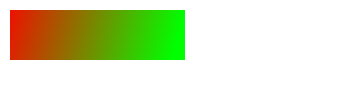
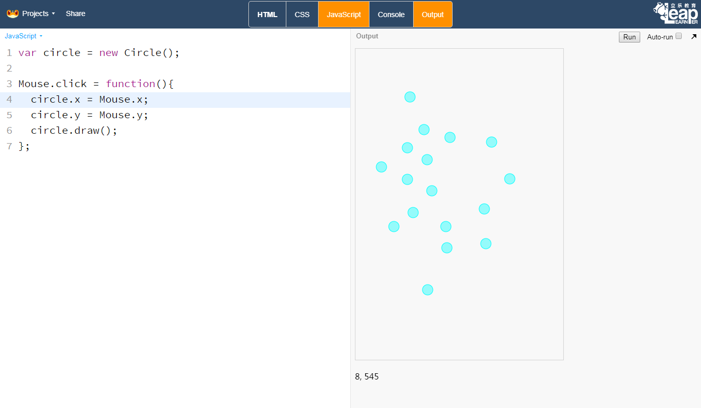

图形样式¶
图形一般包含边和填充，图形的样式也是由这两块共同组成。
线条和填充¶
图形的线条和填充分别由strokeStyle和fillStyle这两个属性来决定
颜色常量¶
fillStyle与stokeStyle可以设置为表示颜色的字符串常量，从而可以直接设置图形的颜色。
一些常见的颜色的常量有aqua、black、blue、fuchsia、gray、green、lime、maroon、navy、olive、purple、red、silver、teal、white、yellow。
RGB值¶
如果用放大镜看显示器的屏幕，会发现屏幕的每个点都是由3个颜色组成，分别是
- Red, 红色
- Green，绿色
- Blue，蓝色
而这3个颜色的首字母组合，即RGB，这也是RGB值的由来。在RGB值的组成中，每一个数字分布代表了每个颜色的强弱，0代表关闭，255代表最高。
有了这3个基本的颜色，按照亮度的不同，就以组成各种个样的颜色。
透明度¶
透明度的数值从0到1，0代表完全透明，即什么都看不见，1代表全不透，是图像透明度的默认值。
在Canvas中，图像的透明度用globalApha来表示，设置图形的globalAlpha值即可获得不同的透明度。
var rect = new Rectangle(10, 10, 200, 100);
rect.globalAlpha = 0.1;
rect.draw();
RGBA值¶
RGBA值是RGB的扩充，在使用颜色时可以直接制定该颜色的Alpha值。
rect.fillStyle = "rgba(255, 255, 0, 0,5)";
前三位对应的是RGB值，第四位即透明度值
HSLA¶
即HSL添加透明度Alpha
虚线¶
图形的setLineDash方法可以用来设置虚线条，它接受一个数组对象，按照数组的顺序，轮流绘制线条的实部、虚部。
var line = new Line(100, 100, 300, 100);
line.setLineDash([5, 10]);
line.stroke();
透明度¶
设置图形的globalAlpha可以改变图形的透明度，默认为1，设置区间：0 ~ 1。
渐变色¶
在上面的例子中，我们图形的颜色是单一的。而在实际生活中，颜色往往都不是均匀的。我们可以创建一个变化的颜色来实现这个效果。
实例：渐变色¶
var grd = ctx.createLinearGradient(0,0,175,50);
grd.addColorStop(0,"#FF0000");
grd.addColorStop(1,"#00FF00");
var rect = new Rectangle(10, 10, 175, 50);
rect.fillStyle = grd;
rect.draw();
渐变色效果

addColorStop是在图像的特定位置创建出制定的颜色，中间的变化则由计算机自动完成。
通过添加更多的颜色，我们可以创建出更多特殊的渐变色。
彩虹是难得一见的奇观，一般只有雨过天晴的时候才会出现，现在，我们就来创建一个彩虹出来。
事件¶
鼠标事件¶
事件驱动在JavaScript中是非常常见的一种程序设计模式，通过监测事件的发生，调用预定的函数，从而实现异步执行的效果。
比如说，当鼠标在画布上移动时，鼠标的坐标值会随之而变，这就是一个简单的事件在驱动着坐标值不断的发生变化。
Mouse的属性
属性 x 鼠标当前的x值，可以在画布左下角看到 y 鼠标当前的y值，可以在画布左下角看到
点击事件
当鼠标在画布上点击时，就会触发click事件，如果配置了Mouse.click函数，那么该函数就会执行。
实例：点击成图¶
这个项目的目标是创建一个空白的画布，当鼠标在画布上面点击时，就会在鼠标的位置绘制一个圆圈。
第一步，我们需要创建一个圆，这里我们可以创建一个默认的圆图形。
var circle = new Circle();
第二步，定义一个绘制圆的函数drawEvent，因为我们要将圆绘制在鼠标的位置，因此我们要将圆中心设置为鼠标的位置。
Mouse对象，即鼠标，有两个属性x和y，他们会随着鼠标的移动而发生变化，因此我们只要直接使用这两个属性就可以了。
function drawEvent(){
circle.x = Mouse.x;
circle.y = Mouse.y;
circle.draw();
}
第三步，将函数绑定给click事件
Mouse.click = drawEvent;
完整代码如下，我们用简单的9行代码，就完成了这个例子。
var circle = new Circle();
function drawEvent(){
circle.x = Mouse.x;
circle.y = Mouse.y;
circle.draw();
}
Mouse.click = drawEvent;
一般情况下，我们可以省略函数名，直接定义一个匿名函数，可以简单写成。
var circle = new Circle();
Mouse.click = function(){
circle.x = Mouse.x;
circle.y = Mouse.y;
circle.draw();
}
点击画布，就会在画布上留下一个圆圈。

键盘事件¶
和鼠标类似，键盘也会触发事件。
down：当按键被按下时触发up：当按键松开时触发press：当按键被按下并且松开时触发
方法一：
Key.a.press = function(console.log('a'));
Key['a']press = function(console.log('a'));
Key是一个对象，因此以上两种方式都可以实现对按键a的监听。
一些特别的键名称
| 按键 | 名称 | 备注 |
| ----- | ---------- | -------- |
| ↑ | ArrowUp | 无press事件 |
| ↓ | ArrowDown | 无press事件 |
| ← | ArrowLeft | 无press事件 |
| → | ArrowRight | 无press事件 |
| Esc | Escape | |
| 空格 | Space | |
| 回车键 | Enter | |
手势事件¶
另外，手机上的键盘需要触发输入才能够显示，因此我们也要避免使用键盘输入。
leapjs包含了对手势的基本支持功能，在手机上，支持4个简单的滑动手势，上下左右，分别对应键盘的上下左右键。使用了这些按键的程序，在手机上可以使用滑动手势来控制。
var rect = new Rectangle(30, 30, 100, 100);
Key.ArrowLeft.down = function(){ rect.x -= 10;};
Key.ArrowRight.down = function(){ rect.x += 10;};
Key.ArrowUp.down = function(){ rect.y -= 10;};
Key.ArrowDown.down = function(){ rect.y += 10;};
function main(){
canvas.clear();
rect.draw();
}
run(main)
在这个例子中，我们可以使用键盘的方向键来移动矩形的位置，也可以在手机上用移动手势来控制。
图形变换¶
所有的图形都可以在画布上按照一定的规律进行变换
平移¶
var circle = new Circle(0, 0, 100);
circle.translate(100, 100);
circle.draw();
图形调用translate即可在画布上进行偏移。
如果需要对线条、多变形进行移动时，就可以使用该方式，而不用
var polygon = new Polygon(0, 100, 0, 150, 50, 100, 100, 100, 200, 50);
polygon.translate(100, 100);
polygon.draw();
放大与缩小¶
我们可以改变矩形的宽高来改变矩形的大小，改变圆的半径来改变圆的大小。但是如果我们要改变其他图形的大小，就有点麻烦了。
不过，我们可以通过修改图像的比例来达到这个效果。
rect.scale(2, 2);
同样的，放大缩小时是以坐标原点作为参考系的，我们可以通过设定锚点来修改。
碰撞¶
所有图形类都有一个方法collide，接受一个参数，必须是另外一个图形类实例，如果两个图形相互碰撞，那么返回碰撞点坐标。否则返回false
rect.collide(circle);
坐标点是一个对象，因此可以直接使用if来判断是否发生碰撞。
在图形进行旋转、翻转、平移后，碰撞仍可以进行判断。
图像的碰撞¶
为了提高执行的效率，不提供像素级别的碰撞判断，图片的碰撞体积默认为图像宽高的0.8（80%），可以通过setCollisionScale来设定碰撞宽高的比例。